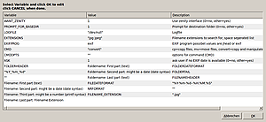

photocopy
Archivierte Anleitung
Dieser Artikel wurde archiviert, da er - oder Teile daraus - nur noch unter einer älteren Ubuntu-Version nutzbar ist. Diese Anleitung wird vom Wiki-Team weder auf Richtigkeit überprüft noch anderweitig gepflegt. Zusätzlich wurde der Artikel für weitere Änderungen gesperrt.
Anmerkung: Jetzt unter Skripte/exifotocopy
Zum Verständnis dieses Artikels sind folgende Seiten hilfreich:
Photocopy ist ein Skript, das von einem netten Ubuntuuser unter der DCL Lizenz (Don't care license) auf Wunsch geschrieben wurde. Das Skript eignet sich hervorragend um Bilder/Fotos von einer Digitalkamera oder einem Speichermedium auf den PC zu kopieren.
Installation¶
Das Skript kann als gepackter Tarball photocopy.tar.gz  heruntergeladen werden.
heruntergeladen werden.
Vor der Nutzung müssen folgende Pakete installiert [1] werden:
exif
nautilus-script-manager (optional)
Paketliste zum Kopieren:
sudo apt-get install zenity exif jhead nautilus-script-manager
sudo aptitude install zenity exif jhead nautilus-script-manager
Das Archiv photocopy.tar.gz in ein beliebiges Verzeichnis entpacken [2]. In das Verzeichnis wechseln, mit dem Befehl [3]
./photocopy-install
wird das Skript installiert.
Konfiguration¶
Das Skript wird über eine Konfigurationsdatei konfiguriert. Hier
./photocopy-config
aufrufen [3].

Im Home Verzeichnis liegt die Konfigurations-Datei ~.photocopy, die selbstverständlich auch mit einem Editor manuell bearbeitet werden kann.
Beschreibung¶
Photocopy ist ein Bash-Skript, das verwendet werden kann, um Fotos/Bilder von einem externen Datenträger (MMC/SD) oder einer Digitalkamera in ein festgelegtes Verzeichnis auf dem PC zu kopieren oder verschieben. Das Skript ist höchst konfigurierbar und enthält einige GUI-Elemente wie z.B. eine Fortschrittsanzeige. Anschließend werden die Namen des Verzeichnisses und der entsprechenden Unterverzeichnisse automatisch generiert und die Fotos/Bilder entsprechend ihrer Exif-Informationen (z.B. Aufnahmedatum) umbenannt. Die Bilder werden in dem ausgewählten Verzeichnis in Unterverzeichnisse mit dem Datumsformat YYYY-MM-TT = Aufnahmedatum und die Bilddateien werden nach Exif-Datum umbenannt und fortlaufend nummeriert YYYY-MM-TT-###.jpg. Ist die Exif-Information nicht vorhanden, erfolgt eine Abfrage mit der Möglichkeit zur manuellen Eingabe.
Das Skript kann direkt im Terminal [3] ausgeführt werden. Als zusätzlicher Komfort kann das Skript als Nautilus-Skript ausgeführt werden. Hierfür muss das Paket nautilus-script-manager installiert sein. Anschließend wird das Skript einfach in das Verzeichnis ~/.gnome2/nautilus-scripts hinein kopiert und ausführbar gemacht [4].
chmod u+x photocopy
Um die notwendigen Exif-Informationen aus den Fotos/Bildern auszulesen, wird entweder das Paket exif oder jhead benötigt.
Die optionale GUI mit einer Fortschrittsanzeige und Benutzerinteraktion wird mit dem Paket zenity aktiviert.
Hinweis:
Wenn zenity nicht installiert ist, erfolgt keine sichtbare Interaktion. Das Skript läuft im Hintergrund und wartet auf eine Eingabe.
Funktion¶
Das Skript sucht im ersten Schritt nach allen Dateien in den angegebenen Verzeichnissen und Unterverzeichnissen mit der Dateierweiterung *.jpg und *.jpeg. Anschließend werden die Exif-Informationen mittels jhead oder exif aus den Dateien ausgelesen. Sollten die Exif-Informationen nicht ausgelesen werden können, erfolgt eine manuelle Datumsabfrage. Mittels der ausgelesenen Information werden die Zielordner und Dateinamen angelegt. Abschließend werden die gefundenen Dateien in das angelegte Verzeichnis hinein kopiert/verschoben und umbenannt.
Das erzeugte Verzeichnis ergibt sich aus drei Komponenten:
Der Kopf (meistens irgend ein Text)
Das Aufnahmedatum (YYYY-MM-DD)
Der Fuß (meistens irgend ein Text)
Der erzeugte Dateiname ergibt sich aus folgenden vier Komponenten:
Der Kopf (meistens irgend ein Text)
Das Aufnahmedatum (beliebiges Format z.B.YYYY_MM_TT--HH:MM:SS oder YYYY_MM_TT-###)
Die Nummerierung
Die Dateierweiterung (meistens *.jpg oder *.png)
Die Standardeinstellung lautet
image-YYYY-MM-DD-####.jpg ^ ^ ^ ^ ^ |kopf| datum | nr |ext|
Ein gutes Beispiel für eine Konfiguration der Ausgabedatei (Bilddatei) wäre: (Dies wird in der Konfigurationsdatei ~.photocopy eingetragen.)
aufnahme-%Y-%m-%d--%H.%M.%S.jpg ^ ^ ^ ^ ^ | kopf | datum | zeit |ext|
Dies ergibt ein Unterverzeichnis mit dem Aufnahmedatum mit dem Format: ~Bilder/YYYY-MM-TT/aufnahme-YYYY-MM-TT--12.15.36.jpg
So ist am Unterverzeichnis das Datum an dem das Foto geschossen wurde sichtbar und in der Datei steht dann das Aufnahmedatum und Aufnahmezeit aus den EXIF-Daten des Bildes.
Beliebige Teile der Variablen können ausgelassen ("") werden [5].
Natürlich wird das Skript laufend von hannenz weiterentwickelt. Seit Januar 2010 steht das Skript unter GPL und es sind einige neue Funktionen hinzugekommen. So wurde eine grafische Konfigurations- Oberfläche mit Tooltips implementiert, mit weitreichenden Optionen zum benennen des Zielverzeichnisses und der Bilder in mehrfacher Verzeichnistiefe, sowie Meldungen über die Gnome Benachrichtigung. Die Bilder/Fotos können nun auch nach belieben skaliert und komprimiert werden. In Kürze erscheint ein neues Wiki mit den aktuellen Änderungen und einer Beschreibung. Der Namen des Skripts hat sich auch verändert und heißt jetzt "exifotocopy".
- Erstellt mit Inyoka
-
 2004 – 2017 ubuntuusers.de • Einige Rechte vorbehalten
2004 – 2017 ubuntuusers.de • Einige Rechte vorbehalten
Lizenz • Kontakt • Datenschutz • Impressum • Serverstatus -
Serverhousing gespendet von